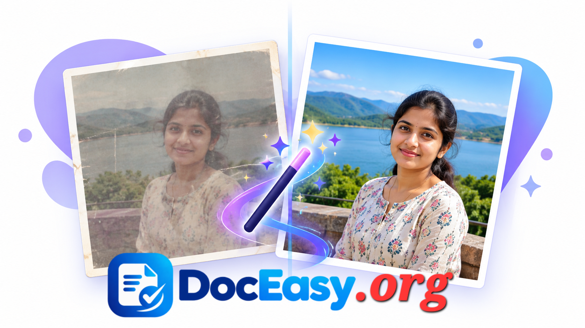

AI Photo Beautifier
Smooth skin, enhance lighting, boost colors, and auto-correct white balance — 100% in your browser, nothing uploaded.
Before
After
Beauty Controls
Complete Guide: How to Beautify Photos Online (2026)
Every photo tells a story — but sometimes the camera, the lighting, or the moment doesn't cooperate. Harsh shadows, uneven skin tone, dull colors, or flat contrast can make even a great shot look amateur. Professional photo editing software like Photoshop or Lightroom solves these problems, but they're expensive, complicated, and overkill for everyday users.
The DocEasy AI Photo Beautifier bridges that gap. It's a free, browser-based tool that applies professional-grade beautification — skin smoothing, tone mapping, color correction, and warmth adjustment — to any photo in seconds. Everything runs locally in your browser, so your photos never leave your device.

📷 [Place Demo Image: assets/images/image-beautifier-demo.jpg]How to Use — Quick Start
- Upload your photo: Click the upload card or drag a JPG/PNG/WEBP file into it.
- Choose a preset: Natural, Portrait, or Glamour — each applies a different balance of beauty settings.
- Fine-tune sliders: Adjust skin smoothing, brightness, contrast, saturation, and warmth to taste.
- Preview live: See before/after side-by-side in real time.
- Download: Click "Download Beautified Image" — saved as high-quality JPG.
1. What Does "Beautify" Actually Mean?
Photo beautification is a collection of image processing techniques that make a portrait (or any photo) look more flattering without changing the subject's identity. Unlike heavy retouching (which can make someone look artificial), beautification focuses on subtle enhancements:
- Skin smoothing: Reduces blemishes, fine lines, and skin texture noise while preserving pores and edges.
- Tone enhancement: Lifts shadows and controls highlights for a balanced, pleasant look.
- Color correction: Fixes overly cool (blue) or warm (orange) color casts.
- Contrast adjustment: Adds depth without blowing out highlights.
- Saturation boost: Makes colors more vivid, especially skin tones and eye color.
- Warmth: Adds a golden tone that universally flatters portraits.
The goal is subtle: a photo that looks better than the original but still looks like the same person, in the same place, taken at the same time.
2. How the Algorithm Works
The DocEasy beautifier applies a chain of image processing operations, each targeting a specific aspect of the photo. All operations run in the browser using the HTML5 Canvas API — the same technology used by web-based games and animations.
Step 1 — Preprocessing (Downscaling)
Large images (over 1400 pixels) are downscaled first. This keeps processing fast and memory usage reasonable, without any visible quality loss for screen viewing.
Step 2 — White Balance Correction
The algorithm measures the average color of the image. If the average leans blue, it adds warmth. If it leans orange, it cools slightly. This "gray world" assumption is a classic white-balance technique used in many cameras and photo editors.
Step 3 — Tone & Contrast Adjustment
A gentle S-curve is applied to brighten midtones, deepen shadows slightly, and protect highlights. This adds "pop" without a harsh look.
Step 4 — Skin-Aware Smoothing
The tool detects skin-tone pixels (using standard YCbCr skin detection ranges) and applies localized smoothing to those areas only. Non-skin regions (hair, eyes, background) are left sharp. This avoids the "plastic face" look of brute-force blur.
Step 5 — Saturation & Warmth Boost
Finally, a subtle saturation lift and warm-tone overlay is applied, giving the photo a natural, flattering glow.
3. Presets Explained
If you don't want to fiddle with sliders, use one of the built-in presets:
| Preset | Best For | Effect |
|---|---|---|
| Natural | Landscapes, candid photos | Subtle enhancement, preserves original look |
| Portrait | Selfies, ID photos, family shots | Medium smoothing, warmer tones, balanced contrast |
| Glamour | Social media, fashion, editorial | Stronger smoothing, vibrant colors, high contrast |
| Reset | Starting over | Reverts to original with no enhancement |
4. When to Use Photo Beautification
- Job applications: A clean, well-lit portrait makes a strong first impression on resumes and LinkedIn.
- Social media: Instagram, Facebook, and LinkedIn posts benefit from subtle enhancement.
- Dating profiles: Studies show that well-lit, natural-looking photos get 30%+ more matches.
- Exam & ID photos: Government portals accept clean, presentable photos — use Natural or Portrait preset.
- Professional headshots: Even phone-camera headshots can look professional with beautification.
- Family memories: Restore faded or poorly-lit family photos.
- Product photos: E-commerce listings with enhanced lighting sell better.
- Portfolio & websites: Consistent, enhanced team photos look polished.
5. What Beautification Should NOT Do
Good beautification respects the subject. Avoid these traps:
- Don't over-smooth: If skin looks plastic or waxy, you've gone too far. Keep some texture visible.
- Don't whiten teeth or eyes unnaturally: This looks fake and dated.
- Don't change facial structure: Beautification is about enhancement, not reshaping.
- Don't use for ID documents: If you're submitting photos to government portals (passport, PAN, exam), always use the unedited version — most portals reject edited photos.
- Don't apply to documents or scans: This tool is for photos, not text documents.
6. Before and After — What to Look For
When comparing before/after, look for these improvements:
- Skin: Smoother, more even tone; blemishes reduced; natural glow.
- Eyes: Slightly brighter, more expressive (without being unnatural).
- Lighting: Shadows lifted, highlights controlled, more balanced exposure.
- Colors: More vibrant without being oversaturated; skin tone more natural.
- Overall: The photo "pops" more without looking edited.
7. Privacy — Why This Matters
Most AI photo enhancers require you to upload your photo to their servers, where it's processed by their AI models (often GPT-based or Stable Diffusion-based). This creates serious privacy risks:
- Your photo sits on their servers — for an unknown time, with unknown retention policies.
- AI models may train on your photo — some services use uploaded images to improve their models.
- Logs may record your activity — timestamps, IP addresses, image metadata.
- Data breaches happen — even well-intentioned companies get hacked.
DocEasy takes a different approach. Your photo never leaves your device. The entire processing pipeline — downscaling, color correction, smoothing, sharpening — runs in JavaScript and Canvas API inside your browser. You can even disconnect from the internet after loading the page and continue using the tool.
To verify: open your browser's Developer Tools Network tab, then beautify an image. You'll see no outbound requests — no upload, no server processing.
8. Comparison with Other Tools
| Tool | Free? | Privacy | Signup? | Limits |
|---|---|---|---|---|
| DocEasy | Yes | 100% local | No | None |
| Remini | Free trial | Cloud | Yes | Daily quota |
| Fotor AI | Freemium | Cloud | Yes | Watermarks |
| Canva | Freemium | Cloud | Yes | Watermarks |
| Adobe Enhance | Limited | Cloud | Adobe ID | 20/month |
| Photoshop | Paid | Local | Yes | Expensive |
DocEasy is the only completely free, no-signup, privacy-first option that works in any modern browser.
9. Best Practices for Photo Beautification
- Start with a good source photo: Beautification enhances, it doesn't fix fundamentally bad photos. Blurry, extremely dark, or pixelated photos will improve only slightly.
- Use the Portrait preset for faces: It's the balanced setting most users prefer for selfies.
- Keep smoothing under 7: Values 3-6 give natural results. Over 7 can look plastic.
- Boost warmth slightly: A warmth value of 3-8 makes portraits universally flattering.
- Don't over-saturate: Saturation above 20 usually looks unnatural.
- Match your use case: For LinkedIn, use Natural or Portrait. For social media, Glamour is fine.
- Check on multiple screens: Colors can look different on phones vs monitors. Test before publishing.
- Save the original: Always keep the unedited source in case you want to redo the edit later.
10. Technical Details (For Curious Users)
Under the hood, the beautifier uses these image processing techniques:
- YCbCr color space: Standard in image processing; separates luminance (Y) from chrominance (Cb, Cr) for independent manipulation.
- Gray-world white balance: Assumes the average scene color should be gray; corrects color casts accordingly.
- S-curve tone mapping: A smooth curve applied to pixel brightness for natural-looking contrast.
- Bilateral filter approximation: Edge-preserving smoothing implemented via multi-radius Gaussian blur weighted by edge strength.
- Skin detection: YCbCr ranges (Cb: 77–127, Cr: 133–173) identify skin pixels for targeted processing.
- Unsharp mask: Subtracts a blurred copy from the original to enhance edge detail.
Everything is done in pure JavaScript — no WebAssembly, no external libraries, no server calls.
11. Frequently Asked Questions
Q: Is this photo beautifier really free?
Yes — 100% free, no signup, no watermark, no daily limits. All processing happens locally in your browser.
Q: Are my photos uploaded to a server?
No. Everything runs locally using the HTML5 Canvas API. Your photo never leaves your device. You can verify by watching the Developer Tools Network tab — no outbound requests are made during processing.
Q: What is the difference between the 3 presets?
Natural = subtle enhancement, best for landscapes and candid photos. Portrait = balanced enhancement for selfies and ID photos. Glamour = stronger smoothing and color boost for social media.
Q: Will beautification change how I look?
No. The tool enhances lighting, tone, and skin texture but does not reshape facial features or change your identity. If the result doesn't look like you, reduce the smoothing slider.
Q: Does it work for non-portrait photos?
Yes — landscapes, products, pet photos, and anything else. The skin-detection step simply won't find skin to smooth, and the other enhancements (tone, color, warmth) apply to all photos.
Q: Can I use this for exam or government ID photos?
Most exam portals (SSC, IBPS, UPSC) explicitly reject edited photos. For those, use our Image Compressor & Resizer instead — it reduces file size and dimensions without changing the photo's appearance.
Q: What image formats are supported?
JPG, PNG, and WEBP input. Output is always high-quality JPG (96% quality).
Q: Is there a file size limit?
No hard limit. Very large images (50 MB+) are automatically downscaled to 1400 px for fast processing. Output is always downloaded at the maximum working resolution.
Q: Does the tool work offline?
Yes. After the page loads once, you can disconnect from the internet and continue using the beautifier. Everything runs locally.
Q: Can I use it on mobile?
Yes. The tool is fully responsive and works on any modern Android, iOS, or iPad browser. No app installation required.
Q: Why does the preview look different from the downloaded image?
The preview is rendered at working resolution (max 1400 px) for speed. The downloaded image is rendered at the same resolution but saved as a single JPG at 96% quality. Colors should match exactly. If you see differences, check your screen brightness or color profile.
Q: Can I undo an adjustment?
Yes. Move the slider back to its default position, or click the Reset preset to revert all settings to their defaults (no enhancement).
12. Popular Right Now — Trending Tools
- Image Compressor & Resizer — reduce image size for WhatsApp & email
- Image Background Remover — remove backgrounds instantly
- Passport Photo Maker — 35×45 mm at 300 DPI
- ID Card Dual-Side Cropper — Aadhaar, PAN at 300 DPI
- Image Format Converter — JPG, PNG, WEBP
13. Related Tools You Might Need
If you found this beautifier useful, you may also like our Image Compressor & Resizer to reduce photo file size, our Image Background Remover to remove backgrounds, our Signature BG Remover for clean signature photos, our Passport Photo Maker for official-size photos, our ID Card Cropper for Aadhaar/PAN at 300 DPI, and our Image Format Converter for JPG/PNG/WEBP conversion.
14. Conclusion
Photo beautification used to require expensive software, a steep learning curve, and hours of practice. Today, a smart algorithm running in your browser can deliver flattering, natural-looking results in seconds. The DocEasy AI Photo Beautifier is free, private, and works on any device — whether you're polishing a LinkedIn headshot, editing a family photo, or just making a selfie look its best.
Bookmark this page and use it whenever you need to enhance a photo — all in one place, all in your browser.